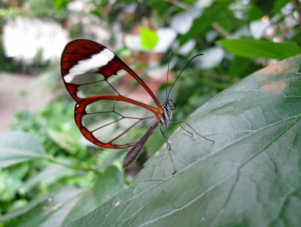
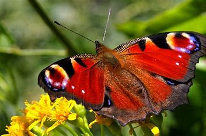
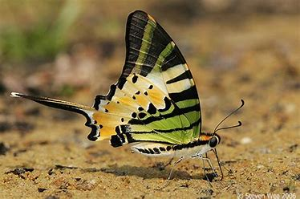
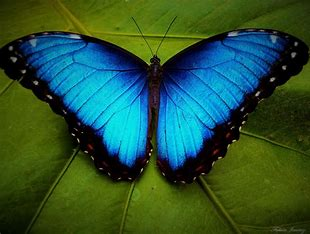
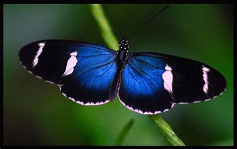
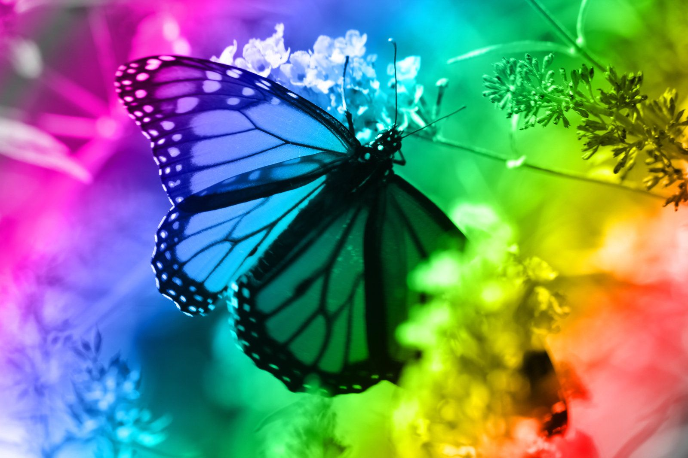

独特的蝴蝶
这一节我将为您介绍一些独特的、神秘的、美丽的蝴蝶。
世界上有成千上万种蝴蝶，每一种都有其独特之处，包括翅膀颜色、纹理、形状和飞行习性等。
透明蝴蝶（Glasswing Butterfly）
透明蝴蝶的翅膀几乎是透明的，只有少量的边缘有颜色，使其看起来像是飞在空中没有翅膀一样。
孔雀蝶（Peacock Butterfly）
孔雀蝶以其华丽而鲜艳的翅膀图案而闻名，模仿了孔雀羽毛的美丽。
剑尾蝶（Swordtail Butterfly）
这类蝴蝶的后翅延长形成像剑一样的尾巴，是其独特的特征。
乌蓝凤蝶（Morpho Butterfly）
这种蝴蝶的翅膀通常呈现出令人惊叹的蓝色，反射出光泽，使其在飞行时变得非常引人注目。
蓝钻石蝴蝶（Blue Diamond Butterfly）
这种蝴蝶的翅膀呈透明的蓝色，宛如蓝色的钻石。
彩虹蝴蝶（Rainbow Butterfly）
其翅膀上有丰富的彩虹色斑，使其在阳光下展翅时呈现出令人惊叹的光彩。
